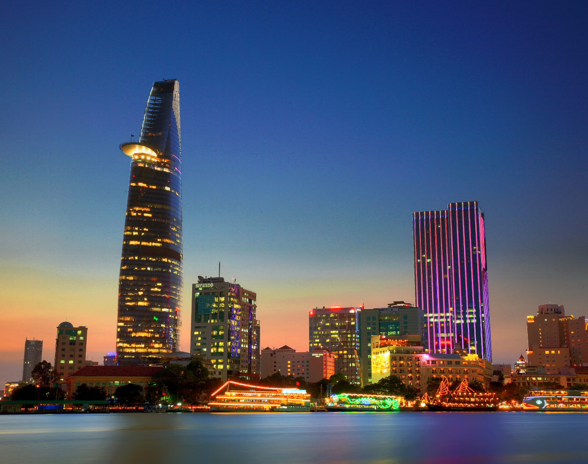
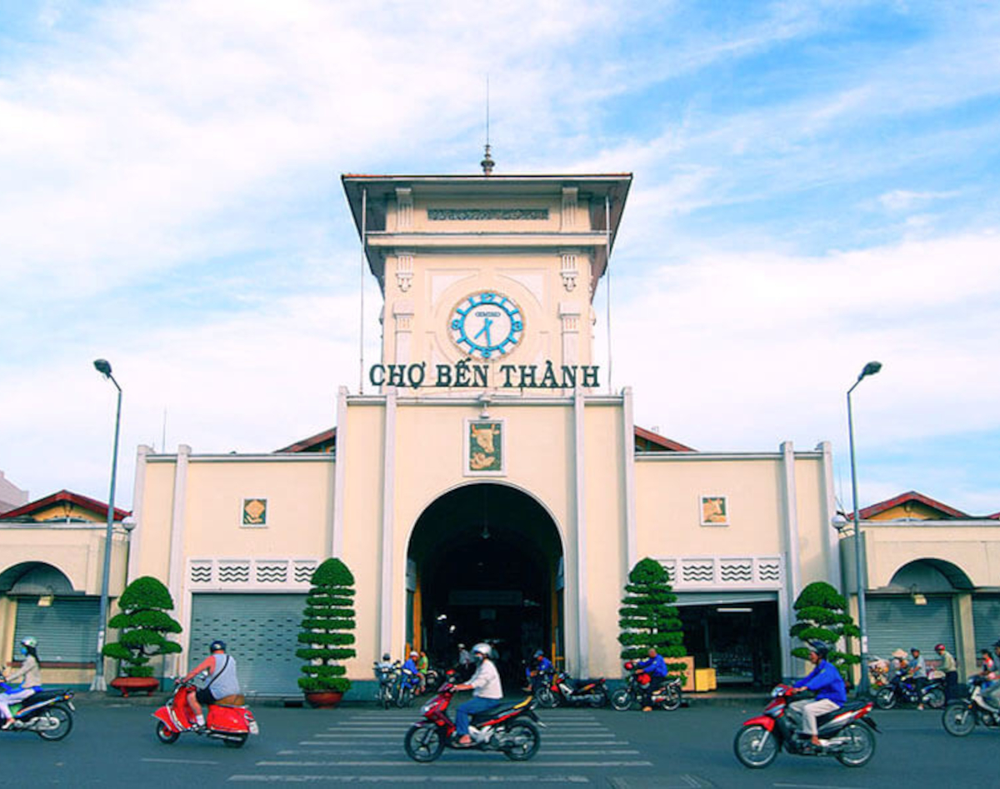
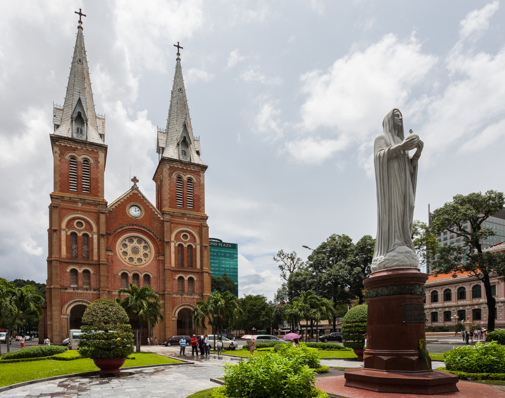

Nếu bạn muốn nhìn trọn Sài Gòn một cách bao quát nhất để cảm nhận được sự nhộn nhịp và
náo nhiệt nhịp sống nơi đây thì đừng bỏ qua tòa nhà Bitexco – tòa nhà cao nhất thành phố
Hồ Chí Minh. Hãy cùng tham quan và khám phá những điểm thú vị tại tòa nhà này nhé! [Read more...]

Nếu như chợ Đồng Xuân là nét văn hóa của Hà Nội thì chợ Bến Thành chính là một trong nét
đặc sắc của Sài Gòn mà khi nhắc đến ai cũng sẽ nhớ đến đầu tiên. Thật sự sẽ là một điều
tiếc nuối lớn khi đặt chân đến đây mà bạn bỏ lỡ chợ Bến Thành.
[Read more...]

Nằm ở trung tâm Quận 1 (TP. Hồ Chí Minh), nhà thờ Đức Bà Sài Gòn nổi bật với kiến trúc
Pháp cổ, không gian rộng thoáng từ bên ngoài tới bên trong thánh đường. Đây là địa điểm
mà du khách không thể bỏ qua khi ghé thăm thành phố Hồ Chí Minh hoa lệ.
[Read more...]